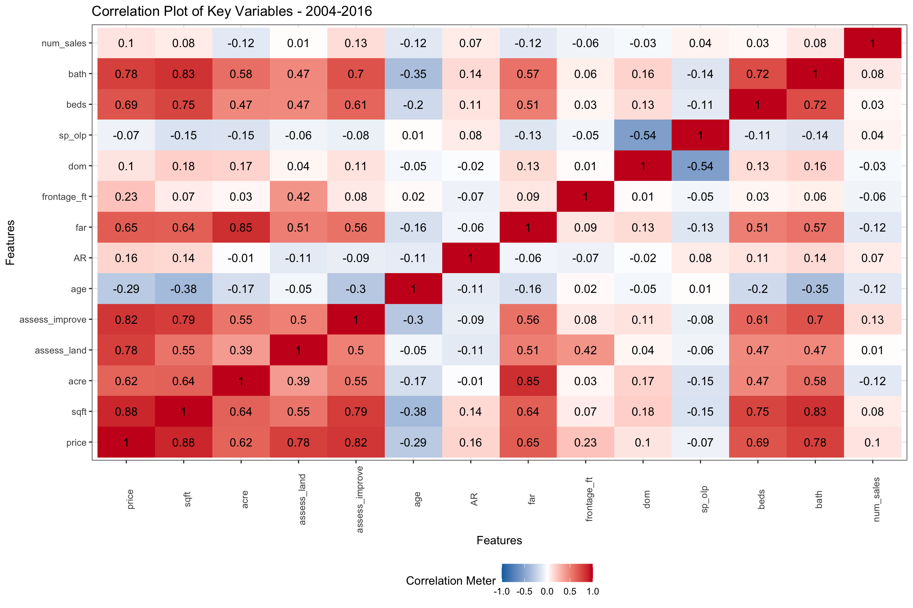
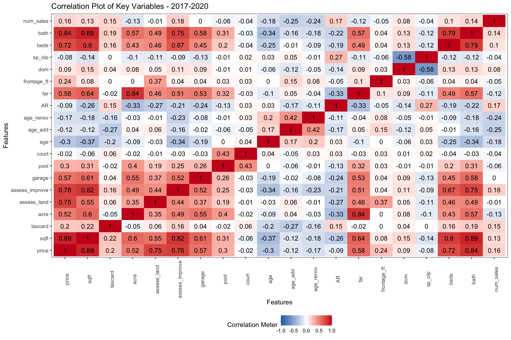
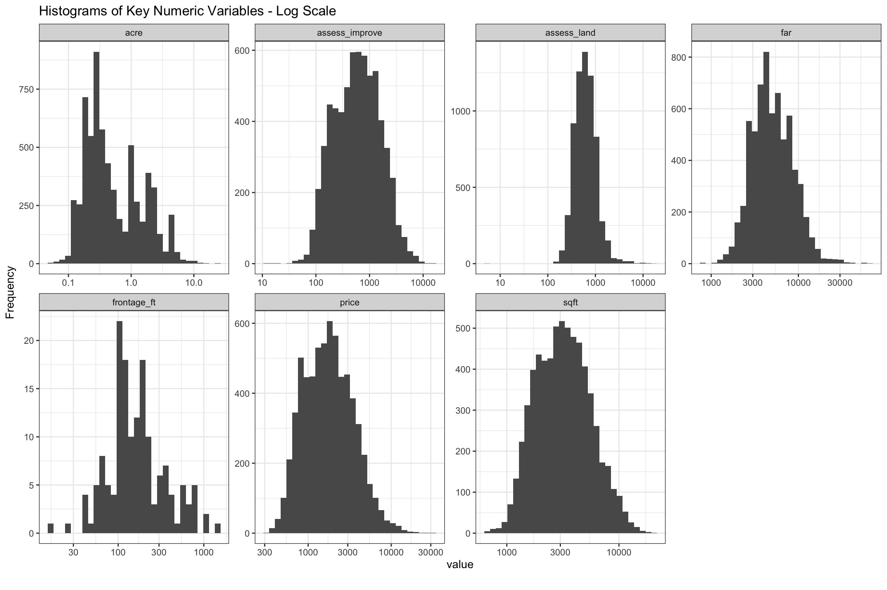
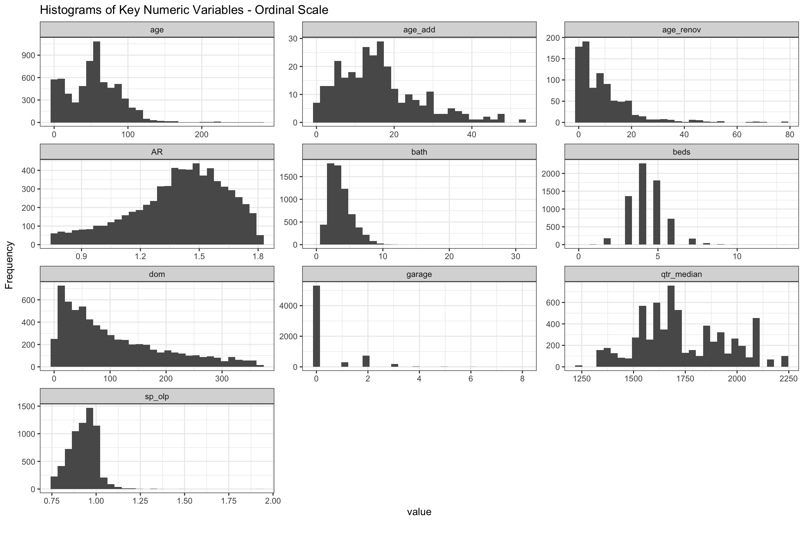
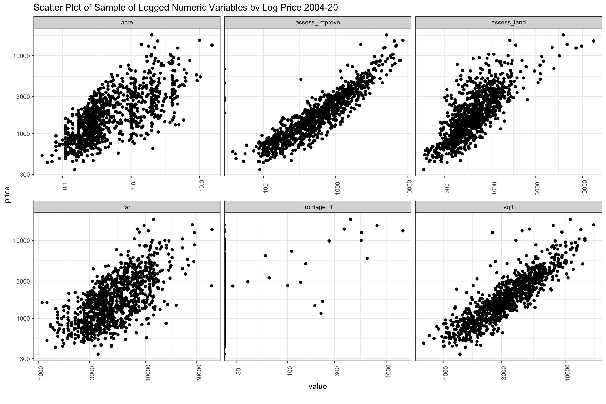
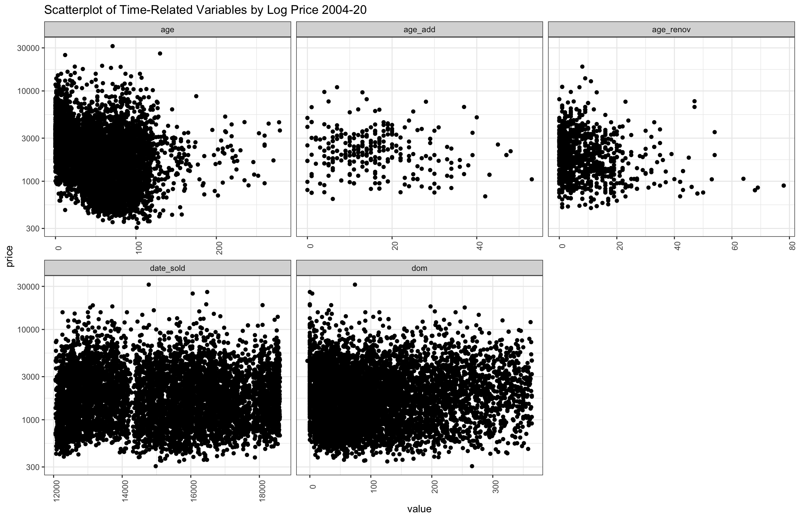
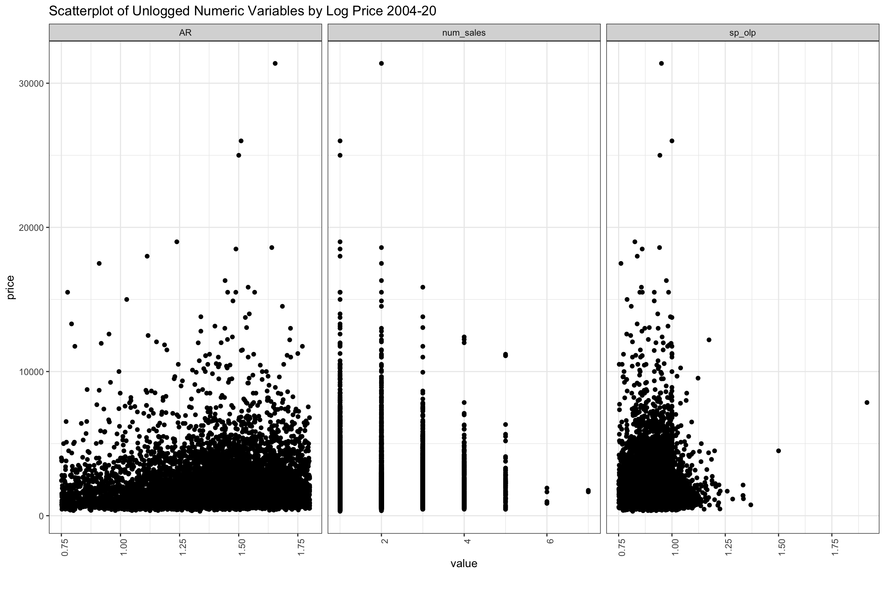
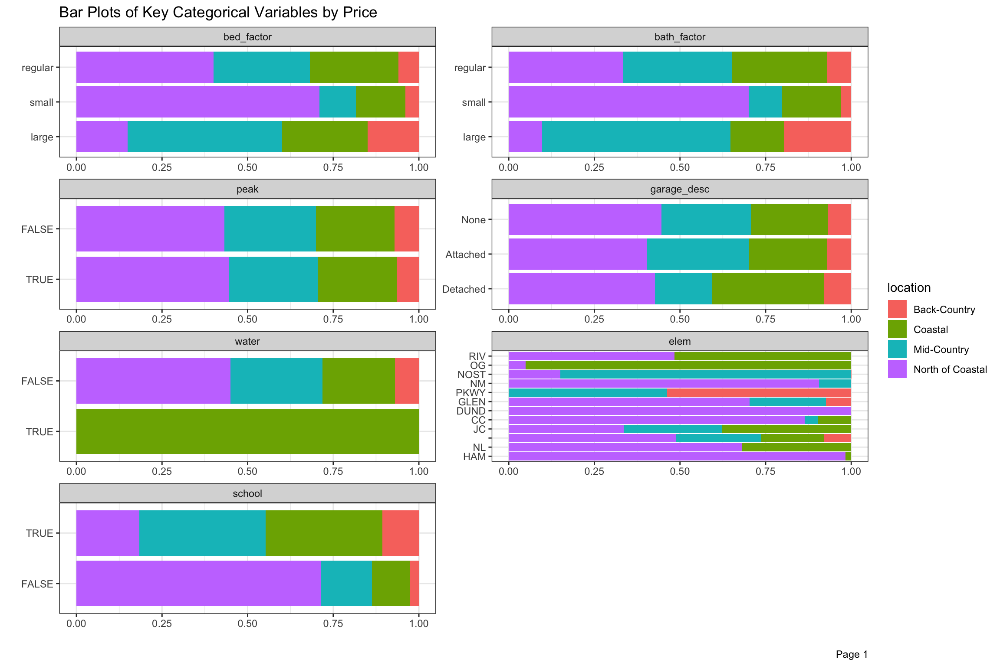
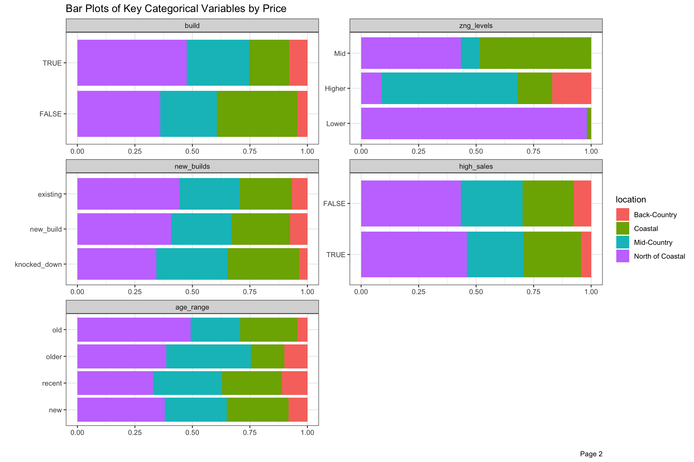

Introduction
Though losing ground in recent years, Connecticut has long had some of the highest average incomes and home prices in the country. Within the State, some towns have had significantly higher selling prices than others (shown in chart above). In this series, we will attempt to build a model to predict selling prices in the highest-priced Town of Greenwich (shown in red). In the case of Greenwich, the same house around the corner in a neighboring town, might sell for a considerably lower price because of perceived advantages, such as schools quality, tax rates and other local amenities. Even within the town, a small group of neighborhoods have average selling prices which are significantly higher than others.
To make it even more difficult, some preferences have been shifting in recent years as newcomers have favored smaller plots in closer proximity to shops and transportation. In addition, along with the income of town residents in aggregate and Connecticut’s financial challenges more broadly, property prices have been slowly declining since 2007. In 2017, after some commentators disparaged local selling conditions in the national press, liquidity dried up and the number of units sold fell to levels not seen since the financial crisis. The market only started picking up again in 2019, and accelerated further in 2020, as Millennial families, who had deferred normal patterns of suburban migration, finally took a serious look in hopes of riding out the NYC lock-down with a back yard.
In this series (of yet undetermined size), we will explore in more depth the prices of homes in Greenwich over time and in the recent period. From time to time, we have noticed that websites offering algorithms on millions of homes nationally have surprisingly large errors when “predicting” local selling prices. By its nature, real estate is an emotional purchase and market conditions fluctuate and complete and clean data is hard to come by, so there is a limit to the accuracy of such predictions, but we will explore if it is possible to do better in this series.
Resources and Preparation
As described in Using drake for ETL and building Shiny app for 900k CT real estate sales (also the source of the graphic above), we did all of the ETL and modeling for this series using the drake package. Although it was bulk of the work, we are not going to discuss data preparation in this series. We tried on and off to wrangle transaction data from multiple sources for some time. Only with the addition of drake, we felt we were able to get clean enough data for modeling (though still not perfect). Follow the link to the full Shiny app of Connecticut Property Selling Prices vs Assessment Values over Three Revaluation Cycles shown above for how a {drake} workflow looks.
As this will be the first attempt by Redwall Analytics blog site to build a model on data, there is much to learn. As usual, we looked around for other posts and books attempting to predict real estate prices, and there were not a lot. Hands-On Machine Learning with R by Bradley Boehmke & Brandon Greenwell was an excellent resource on the options for modeling home prices with regression, but this referred to Kaggle’s Ames data set, which doesn’t have the time span or heterogeneity of our data.
In this post, we heavily use the {DataExplorer} package. In Part 3, we will also rely on the {vtreat} package for data complexities like handling missing-ness, categorical variables with too many or rare levels and for variable selection. In Part 4, we will use the {h2o} auto_ML() functionality to explore and look for the best model.
Data Summary
We have gathered 17 years of Single Family home sales, and tried to filter out transactions which might not be “arms length”. For example, we edited out transactions which took more than one year to close and sold for less than 75% of original listing price assuming the normal selling process had been impaired. By convention in Connecticut, real estate is assessed at 70% of estimated market value. We filtered out homes which sold for less than 75% or greater than 180% of assessed value (ie: 52.5-126% of the Town’s best guess for tax purposes), making the assumption that there must have been special circumstances to warrant such a wide divergence.
In the recent slow period, it is likely that many homes came to market and were not sold on the first attempt. We are also only able to consider homes which actually sold, and are not adjusting days on the market where more than one attempt was made before selling. We also note that some of our data fields, such as garage, taxcard, court, pool and condo, age_renov and age_add, are only available in the last few years. Others like rooms is not available more recently though we have beds and bath consistently over the period.
Out of approximately 16,000 total property sales and 12,000 Single Family home sales during the period, we have just over 7,100 for our model building. In its 5-year revaluation conducted in 2015, we observed that the Town of Greenwich used about half of all available property sales, so it is likely that there are still transactions which can be considered non-representative, such as related parties, financial distress, and other special conditions, like homes which were purchased for demolition. After all that, it is likely that there are outlier transactions in our data set which will need further consideration if the goal is to predict the selling price of a single family home under normal circumstances.
Historical and Recent Trends Since 2003
In recent years, the pace of sales slowed sharply, and average prices and sizes of homes sold, declined from 2007 peak levels. There has been much discussion of rising income inequality, but as we wrote in IRS Data Shows Growth in Number not Income of Highest Earners since 2005, income differentials between the highest and lowest earning CT groups have narrowed somewhat as conditions changed, particularly in the financial services industry, where many firms departed or closed since the GFC, and new equally high paying firms did not replace them.
The values of the most expensive properties have been in slow decline, while the least expensive have risen consistently since 2012, and may now exceed the previous peak levels. Even before CV-19, even with steady growth at the lower end, the average price per square foot of single family homes sold fell from over $675 to around $550. Within the overall downtrend, there have also been a change in the age and size mix, as builders replaced usually older and smaller, with larger homes on existing lots. Despite abundant new building, the average age of homes sold in the sample has risen by 5-7 years over the mid-2000s. Contributing to this, tastes have shifted from multi-acre plots in the “Back Country” to smaller lots closer to town and transportation, often in the “Coastal” area.
It is likely that the many owners of larger, more expensive properties far from the center, decided to hold onto them rather than sell in disadvantageous conditions. The decline in volumes shown in 2017 and 2018 and average square foot of homes sold may be partly a function of this. It most housing markets, people tend to sell in order to move to a new home, but this need can be less urgent for some in Greenwich. While the market was already picking up in 2019 and 2020, average prices may have been held back by backlog of demand to sell, which is likely to run out eventually. In short, the median and average prices probably didn’t represent the true run rate of mean valuation a couple of years ago, nor does it in 2020. The coming year will be interesting to watch.
Click to see code generating table
#summary stats in datatable
t <-
unique(data)[
year(date_sold) > 2000,
.(
.N,
mn_sqft = mean(sqft, na.rm = TRUE),
mn_price = mean(price, na.rm = TRUE),
med_price = median(price, na.rm = TRUE),
mn_price_sqft = (sum(price, na.rm = TRUE) / sum(sqft, na.rm = TRUE)) * 1000,
mn_age = mean(age, na.rm = TRUE)
), year(date_sold)][
][order(year)]
# Print
dt <-
DT::datatable(
t,
colnames =
c(
"Year",
"Annual Units",
"Avg. Sqft.",
"Avg. Price ($k)",
"Median Price ($k)",
"Avg Price/Sqft. ($)",
"Avg. Age"
),
rownames = FALSE,
options =
list(
pageLength = 18,
scrollY = TRUE)
) %>%
formatRound(columns = 1,
digits = 0) %>%
formatRound(columns = c(2:7),
mark = ",",
digits = 0)
Assessed Values
Key variables for our analysis are not hard to find, with assessments, available ex ante for model building, looking like a front-runner. The “Overall Quality” variable was one of the most important in the Kaggle Ames data, but we don’t have an equivalent measure for recent periods. Every five years, the town visits homes in order to determine the “condition” and “grade” when setting the portion of value attributable to “improvements” for tax purposes. This portion of the assessed value would ideally be our proxy for “Overall Quality”, but we only have it for the period of 2010-18. Since there are ~14,000 single family homes, and we can only remember someone from the Assessor’s office showing up once in 20 years, so this may also not be the most consistent and accurate measurement. We do however have the two components of the assessed value, land and improvements, up until the most recent sales. In Greenwich, the ratio of improvements to total assessed value is only 50% on average. In comparison, we discovered that improvements made up 85% of assessed value in one area in Florida so the size and attributes of the physical structure is likely to be less than in most places. For our analysis, we will subdivide assessed value into its land (assess_land) and improvement (assess_improve) components in hopes that the portion attributable to improvements can be a proxy for “Overall Quality” though imperfect.
Correlations over Early Years
Over the 2003-2016 period shown in Figure 3, we can see that sqft is likely to be the most important variable for predicting price, with 88% positive correlation (shown in red), but related variables like beds and bath are also highly correlated. Similarly, assess_land and assess_improve are positively correlated, though less than sqft. We are focusing on prediction in this series, but several of our many important independent variables are highly correlated with each other, which would cause problems if our focus was inference. The Floor Area Ratio (far) is a function of acre and zoning (not shown here). FAR has become an increasingly important consideration over the period, as it governs the maximum size of home which can be built on a given lot. With the move towards smaller lots in the Coastal areas, builders scooped up lots perceived to be less than the best use of that land. Not surprisingly, age is negatively correlated (older homes are less desired). Older homes sold also have fewer bathrooms, bedrooms, square feet and even acreage shown in blue. The higher correlation of price with bath than beds is interesting, but this may be a function of age. Newer homes probably are built with more bathrooms on balance.
Days on market (dom) is only slightly correlated with price, but we have filtered out the really stale listings (over 365 days), so it would probably look different if we had all sales. We can also see that dom is negatively correlated to sp_olp (selling price divided by original listing price). Homes which are on the market longer sell for relatively less compared to the original listing price as prices are reduced. The Assessment Ratio (AR), the ratio of selling price to assessed value, should be unbiased with respect to selling prices, but we can see that the correlation is somewhat positive during this period. This suggests that homes with higher priced homes were sold for relatively more versus assessed value than would have been expected (ie: they were under-assessed). We can also see that AR is positively correlated to sqft, beds, bath, and negatively correlated to age. It suggests that the assessment process may have not fully accounted on the tax rolls for newer, larger homes, at least in the population which was sold, at least up until 2016.
Click to see code generating table
# Select vars
late_vars <-
c("condo", "court", "pool", "garage", "taxcard", "qtr_median")
chart_vars <-
setdiff(vars, late_vars)
# Separate continuous variables and log transform where appropriate
cont <-
split_columns(copy(data[between(year(date_sold), 2004, 2016), ..chart_vars]))$continuous
# Helper to filter skewed vars
skewed <- function(var) abs(e1071::skewness(var, na.rm = TRUE)) > 1
is_skewed <- names(cont)[sapply(cont, skewed)]
is_skewed <- setdiff(is_skewed, "bath")
cont[, (is_skewed) := lapply(.SD, log1p), .SDcols = is_skewed]
# Corrplot of 2004-2016
p <- plot_correlation(
cont,
type = "continuous",
cor_args = list("use" = "pairwise.complete.obs"),
title = "Correlation Plot of Key Variables - 2004-2016",
ggtheme = theme_bw()
)

Correlations Since 2017
In Figure 4 below, we isolate the years 2017-20 where we have additional variables including: age_renov (years since renovation), age_add (years since addition), court, pool, garage (number of garages) and taxcard (source of sqft data). There don’t seem to be many significant differences in the correlations of key variables linked to price from the earlier period in Figure 3 above. One key difference though, is that the Assessor’s Office seems to have adjusted assessed values to better reflect selling prices in the 2015 revaluations. Selling prices of larger homes are now negatively correlated with Assessed Value. Not surprisingly, age_renov (age of renovation) and age_add (age of addition), which we didn’t have for the early period, are the similarly negatively correlated with price as above. age now is essentially uncorrelated to AR. We will see in Figure ?? below, the price relationship with age may be “multimodal”. If we were to just look at taxcard (the source of sqft), it would have a positive correlation of 20% with price and sqft. Builders and architects reporting newer homes are likely larger and more expensive.
Click to see code generating table
# Select vars
chart_vars <-
setdiff(vars, c("qtr_median", "condo"))
# Separate continuous variables and log transform where appropriate
cont <-
split_columns(copy(data[year(date_sold) > 2016, ..chart_vars]))$continuous
cont[, (is_skewed) := lapply(.SD, log1p), .SDcols = is_skewed]
# Corrplot of 2017-2010
p <- plot_correlation(
cont,
type = "continuous",
cor_args = list("use" = "pairwise.complete.obs"),
title = "Correlation Plot of Key Variables - 2017-2020",
ggtheme = theme_bw()
)

Histograms
There is a lot to be discovered from the histograms of our property sales. In the charts below, we removed home sold in 2004 because that was the last year before selling prices stepped up to higher levels. Our star variables, assess_land, far and sqft, all look Gaussian on log scale, although some might be moderately skewed. We are putting a lot of years together here, so that might be part of it. It is interesting that assess_land and assess_improve are more skewed than the other variables, and also that assess_land is positively, while assess_building is negatively skewed. There is possibly a lower boundary for assess_land, and also waterfront properties may fatten the tails at the higher end. Also, there is a lot more variation in assess_improve than in assess_land even though both make up half of the total assessed value on balance. All of the lots in a given zoning and acreage should have similar values so that makes sense. The majority of home sales are less than 1 acre, though there are a few areas zoned for up to 10 acres. The acre variable looks less bell shaped, so we will have to give this some consideration. The price variable looks right skewed, but only moderately so.
Click to see code generating charts
# Select vars
chart_vars <- setdiff(is_skewed, c("dom", "age_renov", "num_sales"))
# Separate continuous variables and log transform where appropriate
cont <-
split_columns(copy(data[between(year(date_sold), 2004, 2020), ..chart_vars]))$continuous
# Plot histogram of skewed distributions log10 transformed
p <- plot_histogram(
cont[, .SD, .SDcols = chart_vars],
scale_x = "log10",
title = "Histograms of Key Numeric Variables - Log Scale",
ggtheme = theme_bw())

As mentioned above, most are “nearly normal”, but acre, assess_improve and assess_land show moderate skew. One place we are still not clear is how much we should worry about the remaining skew affecting our predictions. It seems likely that it would be possible to further reduce with Box Cox transformations, or dropping outliers. As we will discuss further down, further transformation of acre may be needed.
Click to see code generating charts
# Select vars
trans_vars <- setdiff(is_skewed, c("bath", "frontage_ft", "num_sales"))
# Calc skew and kurtosis vectors
skew <-
apply(
data[between(year(date_sold), 2004, 2020), sapply(.SD, log1p), .SDcols = trans_vars], 2, e1071::skewness, na.rm = TRUE
)
kurt <-
apply(
data[between(year(date_sold), 2004, 2020), sapply(.SD, log1p), .SDcols = trans_vars], 2, e1071::kurtosis, na.rm = TRUE
)
# Display skew and kurtosis dt
d <-
data.table(
measure = c("skew", "kurtosis"),
rbind(skew[complete.cases(skew)],
kurt[complete.cases(kurt)])
)
Most homes were built between 50-100 years ago, though we can see the recent (re)building boom close to the y-axis. Renovations and additions mostly over the 20 and 40 years, respectively. It is hard to see here, but most homes sold have not had recent additions or renovations. None of the age variables appear to be bell-shaped, so this will take some further thinking. We filtered out sales with Assessed Ratios (AR) above 1.8 and below 0.75, homes which took longer than 365 days (dom) to sell and homes which sold for less than 75% of original list, so these charts are all truncated, and even if they were not, have natural upper and lower boundaries. The variables for beds, bath and garage all look bell-shaped, but we are expecting to make some transformations of these because they are so highly correlated with other variables.
Click to see code generating charts
# Separate continuous variables and log transform where appropriate
cont <-
split_columns(copy(data[between(year(date_sold), 2004, 2020)]))$continuous
# Choose chart vars
chart_vars <- names(cont[, .SD, .SDcols = !is_skewed])
# Plot numeric not log transformed data
p <- plot_histogram(
cont[, .SD, .SDcols = chart_vars],
title = "Histograms of Key Numeric Variables - Ordinal Scale",
ncol = 3L,
nrow = 4L,
ggtheme = theme_bw())

Scatter Plots
In the chart below, we show the log-log scatter plot of these our key variables versus price (y-axis), which shows selling prices flatten out after ~1 acre and possibly with assess_land, though less defined. Variables pertaining to house size like sqft and far continue their linear rise over the full range of prices. If anything, assess_improve looks like sqft, but might even have a slight quadratic shape. We might experiment with a splines to represent acre to see how that goes.
Click to see code generating charts
# Select vars
scatter_vars <- setdiff(is_skewed, c("court", "taxcard", "num_sales"))
# Scatterplot
p <- plot_scatterplot(
data[, .SD, .SDcols = scatter_vars],
by = "price",
scale_y = "log10",
scale_x = "log10",
ncol = 3L,
nrow = 2L,
sampled_rows = 1000L,
theme_config = list("axis.text.x" = element_text(angle = 90)),
title = "Scatter Plot of Sample of Logged Numeric Variables by Log Price 2004-20",
ggtheme = theme_bw()
)

The next group of scatter plots shown below are time-related variables. The newest homes sell for the highest prices, but there appears to be some homes that hold up beyond 50 years, then several higher points before falling off again after 110 (although the data gets thin at this point). There are a considerably number of 200+ year old homes sold, but these may be historical landmarks. At least recorded in the data, there is a surge of renovations in the last 20 years, which seems to add considerably to price, though less relevant to price after about 25 years. Additions don’t seem add as noticeably to price as renovations.
The dates are data.table integer types, so the year is not visible, but there is a very wide range of selling prices represented consistently over time. A slight decline in number of higher priced sales in recent years is apparent, and there are two periods with fewer very high priced sales around the GFC and again around 2017. Homes selling below $1 million are minority over time and there have been fewer in the recent years. The dom variable has been truncated after 360 days, but would fall off if the chart continued.
Click to see code generating charts
# Select vars
chart_vars <- c("price", "age", "age_add", "age_renov", "date_sold", "dom")
# scaterplot
p <- plot_scatterplot(
data[, ..chart_vars],
by = "price",
ncol=3L,
scale_x = "log10",
theme_config = list("axis.text.x" = element_text(angle = 90)),
title = "Scatterplot of Time-Related Variables by Log Price 2004-20",
ggtheme = theme_bw()
)

The convention in Connecticut is that assessed value should represent 70% of the market value, so on balance, homes should sell for about 1.4 assessed value (1 / 0.7), and we have filtered out AR below 0.75 and above 1.8. The chart seems to peak around this level, but it is hard to say much about density in this chart which is sampled. We also see that some homes have turned over every few years, and these seem to have lower prices though above “num_sales” was slightly positively correlated with price. Also, we can see that the highest valued home sales sell for less than the original listing price. On balance, homes which are selling above original list are towards the lower end of sales prices, though we filtered below 75% of original list price when they took more than a year to sell.
Click to see code generating charts
# Select vars
chart_vars <- c("price", "sp_olp", "AR", "num_sales")
# Scatterplot
p <- plot_scatterplot(
data[, ..chart_vars],
by = "price",
#sampled_rows = 2000L,
theme_config = list("axis.text.x" = element_text(angle = 90)),
title = "Scatterplot of Unlogged Numeric Variables by Log Price 2004-20",
ggtheme = theme_bw()
)

Catagorical Variables
There are over 50 neighborhoods defined by the Town, but we have divided these into 4 larger groups with “North of Coastal” being the largest by volume, but significantly lower selling prices on average. We will talk more about school and neighborhood in greater detail in the next post as cross-sections of location seems like an important aspect of this project. There are a few other geographical variables in our data, including elem, area and assess. For now, the four super-neighborhoods are defined in the legend, and the categorical variables are divided by location and aggregated by sale price in Figure 10 below.
Homes with <4 beds or <2.6 bathrooms were small, <5 beds or <6 baths were regular and above those numbers were large (denoted bed_factor and bath_factor). Home sales closing between May and August, when families try to prepare for the start of school, which were more than half the sales by volume, are marked as peak. Elementary schools in the four highest priced districts were denoted by school. The build variable refers to properties which have the potential to add 25% more space given their far, and we set up zng_levels based on lowest, middle and highest average sales prices. We thought that properties which sold often might sell for less, so we denoted properties selling 3 or more times as high_sales. Almost 1/4 of the properties by price sold this frequently in 17 years, which is surprisingly high.
In these charts, we can see that “North of Coastal” is less represented in the highly desired elementary school districts, and has a bigger share of smaller and older homes and less expensive zoning. Among homes which were sold, it has more on lots which could still be expanded or rebuilt into larger square footage.
Click to see code generating charts
# Separate discrete variables
disc <- split_columns(copy(data))$discrete
# Helper function to filter vars with less than 15 levels
low_levels <- function(var, levels = 15) length(levels(as.factor(var))) < levels
# Filter cols with find_levels and drop "street_suffix"
bar_data <-
cbind(
disc[!is.na(build) & bed_factor != "" & age_range != "",
.SD[, !"street_suffix_2"], .SDcols = low_levels],
price = log10(data$price)
)
# Reorder
setcolorder(bar_data, names(bar_data)[c(1:5, 13, 6:12, 14)])
# Barplot
p <- plot_bar(
bar_data,
with = "price",
by = "location",
title = "Bar Plots of Key Categorical Variables by Price",
nrow = 4L,
ncol = 2L,
ggtheme = theme_bw())

Conclusion
DataExplorer offered structure which forced us to think carefully about our variables from a number of perspectives. We also looked at its PCA and QQ-plots, but didn’t include them in this post, and may still use plot_boxplot() when we consider outliers in the upcoming posts. We learned that attributes of the actual structure of home should make up relatively less of the value than most places. Once log transformed, sqft, assess_improve and far are all linear and highly correlated with price. The age and size of homes interacts within location, so that an older home in a desired might actually be dragged downwards towards the value of the land it sits on, while this might be less pronounced in other locations. Newer homes in highly desired areas might be rewarded with even higher selling prices given the scarcity. We think there are interactions as we mentioned with age and bath, bed and taxcard so it may not be easy to specify a linear model which would yield the best predictions. Some variables, like acre and assess_land which may not be linear over price might benefit from transformations like a spline. We have some variables which run the full time span, and others which only are available starting in 2017. Since the overall prices have been somewhat stable over time, we also might expand or reduce the time periods which we use in order to have enough data in a given location. We have done some research in Bayesian Hierarchical models, which would seem to allow us to form a “prior” about the cross-sectional behavior of neighborhoods, so this might be enable us to use our 50 neighborhoods and still have enough data in periods to get accurate predictions. In the next post, we will look more closely about the affect of location on prices over time.